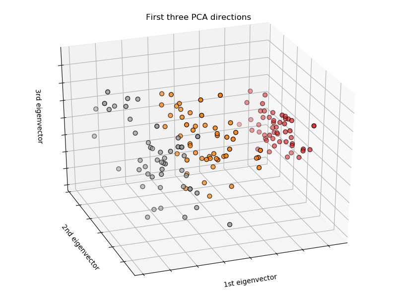
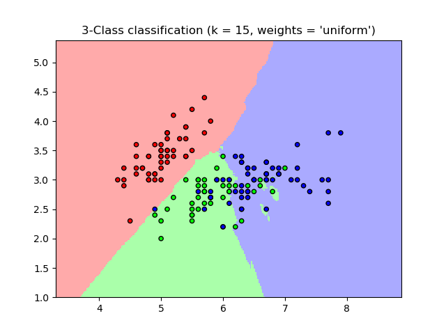
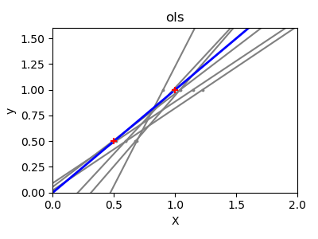
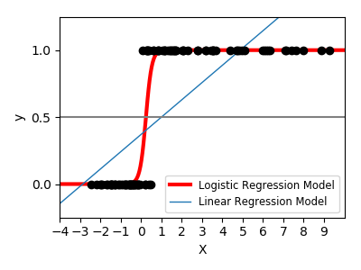
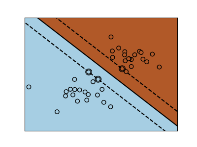
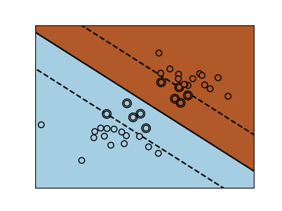
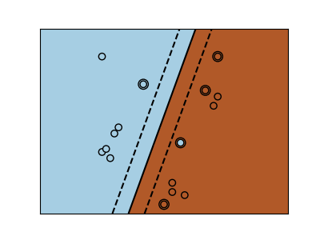
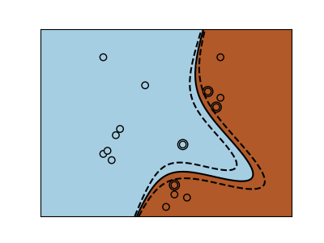
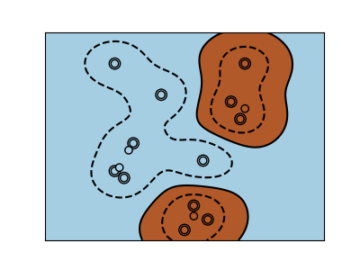

监督学习: 从高维观测中预测输出变量¶
监督学习中要求解的问题
监督学习(Supervised learning)旨在学习两个数据集合之间的关联：
观测数据集合 X 和 我们想要预测的外部变量 y。 变量 y 通常被称为 “target” 或 “labels”。
大多数情况下，y 是一个长度为 n_samples 的 1-D 数组。
scikit-learn中的所有supervised estimators
都实现了两个方法：一个是用于在训练数据上拟合模型的 fit(X, y) ；另一个是用于预测未知标记的观测数据 X
的 predict(X)，返回模型预测得到的标签 y。
术语词汇: 分类(classification) 与 回归(regression)
如果预测任务是把观测数据在一个有限的标签集合中进行分类，或者说是给观测到的对象”命名”,那么这样的预测任务 就叫**分类**任务；另一方面，如果我们的目的是预测一个连续目标变量，那么这样的预测任务就叫**回归**任务。
scikit-learn中进行分类任务的时候, y 通常是一个整型数或字符串构成的向量。
注意: 请参考 Introduction to machine learning with scikit-learn Tutorial 快速浏览scikit-learn中使用的基本机器学习词汇。
最近邻算法与维数灾难¶
分类鸢尾花 (irises):
鸢尾花数据集(iris dataset)是一个分类任务，要根据花瓣(petal)和花萼(sepal)的长度与宽度辨别3种不同品种的鸢尾花
>>> import numpy as np
>>> from sklearn import datasets
>>> iris = datasets.load_iris()
>>> iris_X = iris.data
>>> iris_y = iris.target
>>> np.unique(iris_y)
array([0, 1, 2])
K-近邻分类器¶
针对这问题，我们可以使用的最简单的分类器就是最近邻分类器(nearest neighbor):
给定一个新的观测 X_test, 在训练集中找到一个与新的观测距离最近的观测。因为训练集的观测数据的类标签是已知的，所以那个最近邻的类标签就可以被当作
新观测 X_test 的类标签了。(请参考sklearn的在线文档 Nearest Neighbors section 查看更多最近邻分类器的信息)
训练集 和 测试集
在实验任何学习算法的时候，我们不能在学习器在训练阶段已经见过的样本上测试评估模型的预测性能，这样会带来欺骗性。 所以，我们通常把数据集划分成训练集和测试集。在模型的性能评估阶段，测试集中的数据对学习器来说是全新的从未见过的数据。 这样的测试结果才会真实可靠。
KNN (k nearest neighbors) classification example:
>>> # Split iris data in train and test data
>>> # A random permutation, to split the data randomly
>>> np.random.seed(0)
>>> indices = np.random.permutation(len(iris_X))
>>> iris_X_train = iris_X[indices[:-10]]
>>> iris_y_train = iris_y[indices[:-10]]
>>> iris_X_test = iris_X[indices[-10:]]
>>> iris_y_test = iris_y[indices[-10:]]
>>> # Create and fit a nearest-neighbor classifier
>>> from sklearn.neighbors import KNeighborsClassifier
>>> knn = KNeighborsClassifier()
>>> knn.fit(iris_X_train, iris_y_train)
KNeighborsClassifier(algorithm='auto', leaf_size=30, metric='minkowski',
metric_params=None, n_jobs=None, n_neighbors=5, p=2,
weights='uniform')
>>> knn.predict(iris_X_test)
array([1, 2, 1, 0, 0, 0, 2, 1, 2, 0])
>>> iris_y_test
array([1, 1, 1, 0, 0, 0, 2, 1, 2, 0])
维数灾难¶
For an estimator to be effective, you need the distance between neighboring points to be less than some value \(d\), which depends on the problem. In one dimension, this requires on average \(n \sim 1/d\) points. In the context of the above \(k\)-NN example, if the data is described by just one feature with values ranging from 0 to 1 and with \(n\) training observations, then new data will be no further away than \(1/n\). Therefore, the nearest neighbor decision rule will be efficient as soon as \(1/n\) is small compared to the scale of between-class feature variations.
If the number of features is \(p\), you now require \(n \sim 1/d^p\) points. Let’s say that we require 10 points in one dimension: now \(10^p\) points are required in \(p\) dimensions to pave the \([0, 1]\) space. As \(p\) becomes large, the number of training points required for a good estimator grows exponentially.
For example, if each point is just a single number (8 bytes), then an effective \(k\)-NN estimator in a paltry \(p \sim 20\) dimensions would require more training data than the current estimated size of the entire internet (±1000 Exabytes or so).
这被称之为维数灾难( curse of dimensionality), 是很多机器学习理论和算法都会强调的核心问题。
线性模型：从回归到稀疏¶
糖尿病数据集(Diabetes dataset)
糖尿病数据集由442个病人的10个生理变量组成 (age, sex, weight, blood pressure) , 还有一个指示一年以后疾病进展情况的变量
>>> diabetes = datasets.load_diabetes()
>>> diabetes_X_train = diabetes.data[:-20]
>>> diabetes_X_test = diabetes.data[-20:]
>>> diabetes_y_train = diabetes.target[:-20]
>>> diabetes_y_test = diabetes.target[-20:]
这个数据集的任务是根据已有的生理变量数据预测疾病的进展情况。
线性回归¶
线性回归( LinearRegression )，以其最简单的形式，通过调整一组参数将线性模型拟合到给定的数据集，
以使模型的平方残差之和(the sum of the squared residuals)尽可能小。
线性模型: \(y = X\beta + \epsilon\)
- \(X\): data(训练数据)
- \(y\): target variable(目标变量)
- \(\beta\): Coefficients(系数)
- \(\epsilon\): Observation noise(观测噪声)
>>> from sklearn import linear_model
>>> regr = linear_model.LinearRegression()
>>> regr.fit(diabetes_X_train, diabetes_y_train)
...
LinearRegression(copy_X=True, fit_intercept=True, n_jobs=None,
normalize=False)
>>> print(regr.coef_)
[ 0.30349955 -237.63931533 510.53060544 327.73698041 -814.13170937
492.81458798 102.84845219 184.60648906 743.51961675 76.09517222]
>>> # The mean square error
>>> np.mean((regr.predict(diabetes_X_test) - diabetes_y_test)**2)
...
2004.56760268...
>>> # Explained variance score: 1 is perfect prediction
>>> # and 0 means that there is no linear relationship
>>> # between X and y.
>>> regr.score(diabetes_X_test, diabetes_y_test)
0.5850753022690...
缩减(Shrinkage)¶
如果每个维度的数据点很少，则观测中的噪声将会引起高方差:
>>> X = np.c_[ .5, 1].T
>>> y = [.5, 1]
>>> test = np.c_[ 0, 2].T
>>> regr = linear_model.LinearRegression()
>>> import matplotlib.pyplot as plt
>>> plt.figure()
>>> np.random.seed(0)
>>> for _ in range(6):
... this_X = .1 * np.random.normal(size=(2, 1)) + X
... regr.fit(this_X, y)
... plt.plot(test, regr.predict(test))
... plt.scatter(this_X, y, s=3)
高维统计学习的一个解决方案是将回归系数缩小到零：任意两个随机选择的观测值集很可能不相关。这被称之为岭回归。
A solution in high-dimensional statistical learning is to shrink the
regression coefficients to zero: any two randomly chosen set of
observations are likely to be uncorrelated. This is called Ridge
regression:
>>> regr = linear_model.Ridge(alpha=.1)
>>> plt.figure()
>>> np.random.seed(0)
>>> for _ in range(6):
... this_X = .1 * np.random.normal(size=(2, 1)) + X
... regr.fit(this_X, y)
... plt.plot(test, regr.predict(test))
... plt.scatter(this_X, y, s=3)
这是偏差/方差折衷(bias/variance tradeoff)的一个例子：岭 alpha 参数越大，偏差越高，方差越低。
我们可以选择 alpha 来最小化遗漏错误，这次使用糖尿病数据集而不是我们的合成数据
>>> from __future__ import print_function
>>> alphas = np.logspace(-4, -1, 6)
>>> print([regr.set_params(alpha=alpha)
... .fit(diabetes_X_train, diabetes_y_train)
... .score(diabetes_X_test, diabetes_y_test)
... for alpha in alphas])
...
[0.5851110683883..., 0.5852073015444..., 0.5854677540698...,
0.5855512036503..., 0.5830717085554..., 0.57058999437...]
稀疏性(Sparsity)¶
Fitting only features 1 and 2
Note
完整的糖尿病数据集的表示将涉及11个维度（10个特征维度和1个目标变量）。很难对这种高维表示形成直官感受， 但是认识到它是一个相当空的空间(a fairly empty space)可能是有用的。
我们可以看到，虽然特征2在全模型上有很强的系数，但当与特征1比较时，发现它传递的 y 的信息却很少。
为了改善问题的条件(即减轻维数灾难)，只选择信息量大的特征(informative features)并把信息量太小的特征(non-informative features) 抛弃掉(比如把特征2直接置为0)是很有趣的。岭回归(Ridge regression)的做法是降低这些non-informative features的贡献，但是不会把他们全部置为0。 还有另外一种惩罚方法，叫做 Lasso (least absolute shrinkage and selection operator), 可以把线性模型的一些系数设置为0。 这样的方法被称为 sparse method，并且稀疏性可视为奥坎姆剃刀(Occam’s razor)原理的应用: 总是倾向于简单点儿的模型(prefer simpler models)。
>>> regr = linear_model.Lasso()
>>> scores = [regr.set_params(alpha=alpha)
... .fit(diabetes_X_train, diabetes_y_train)
... .score(diabetes_X_test, diabetes_y_test)
... for alpha in alphas]
>>> best_alpha = alphas[scores.index(max(scores))]
>>> regr.alpha = best_alpha
>>> regr.fit(diabetes_X_train, diabetes_y_train)
Lasso(alpha=0.025118864315095794, copy_X=True, fit_intercept=True,
max_iter=1000, normalize=False, positive=False, precompute=False,
random_state=None, selection='cyclic', tol=0.0001, warm_start=False)
>>> print(regr.coef_)
[ 0. -212.43764548 517.19478111 313.77959962 -160.8303982 -0.
-187.19554705 69.38229038 508.66011217 71.84239008]
针对同一问题的不同算法
不同的算法可以用来解决相同的数学问题。例如，Scikit-Learn中的 Lasso 对象使用坐标下降法
(coordinate descent)解决了lasso回归问题，
这种方法在大型数据集上是有效的。然而，Scikit-Learn还提供 LassoLars 对象(使用了 LARS 算法)，
这对于权向量估计非常稀疏的问题(即只有很少量的观测数据的问题)是非常有效的。
分类¶
对于分类，如在虹膜( iris )分类任务中， 线性回归并不是正确的方法，因为它会给远离决策前沿的数据赋予太多的权重。 这时，一个可用的线性方法是去拟合一个 sigmoid function 或者 logistic function:
>>> log = linear_model.LogisticRegression(solver='lbfgs', C=1e5,
... multi_class='multinomial')
>>> log.fit(iris_X_train, iris_y_train)
LogisticRegression(C=100000.0, class_weight=None, dual=False,
fit_intercept=True, intercept_scaling=1, max_iter=100,
multi_class='multinomial', n_jobs=None, penalty='l2', random_state=None,
solver='lbfgs', tol=0.0001, verbose=0, warm_start=False)
上述方法就是广为人知的 LogisticRegression.
多类别分类任务
如果你有多个类需要预测，那么一个可选的方法是训练多个一对多分类器(one-versus-all classifiers),然后在预测阶段使用 启发式投票做出最终的决策。
在logistic回归模型中如何达到 缩减(Shrinkage) 与 稀疏(sparsity)
参数 C 控制着 LogisticRegression 对象中正则化的量：C 的值越大会导致越小的正则化量。
penalty="l2" 会导致logistic回归模型的模型系数发生缩减但系数本身并不会变的稀疏 缩减(Shrinkage), 而
penalty="l1" 会导致logistic回归模型的模型系数变得稀疏起来 稀疏性(Sparsity).
练习
尝试用最近邻模型和线性模型对数字数据集(digits dataset)进行分类。留出最后的10%作为测试集， 并测试模型在这些数据上的预测性能。
from sklearn import datasets, neighbors, linear_model
digits = datasets.load_digits()
X_digits = digits.data / digits.data.max()
y_digits = digits.target
练习题答案: ../../auto_examples/exercises/plot_digits_classification_exercise.py
支持向量机 (SVMs)¶
线性 SVMs¶
支持向量机（Support Vector Machines） 属于判别式模型家族：这类模型试图找到一个若干样本的组合来构建一个能够最大化两类之间间隔的平面。
(they try to find a combination of samples to build a plane maximizing the margin between the two classes.)
模型的正则化可以由参数 C 来控制: 一个较小的 C 意味着在计算间隔(margin)的时候用到了分隔线(separating line)周围
很多或全部的观测值,也就意味着较大的正则化量；而一个较大的 C 意味着在计算间隔(margin)的时候用到了距离分隔线(separating line)
比较近的若干个观测值,也就意味着较小的正则化量。
| Unregularized SVM | Regularized SVM (default) |
|---|---|
|  |  |
SVMs 既可以用于回归问题 –SVR (Support Vector Regression)–,也可以用于分类问题 –SVC (Support Vector Classification).
>>> from sklearn import svm
>>> svc = svm.SVC(kernel='linear')
>>> svc.fit(iris_X_train, iris_y_train)
SVC(C=1.0, cache_size=200, class_weight=None, coef0=0.0,
decision_function_shape='ovr', degree=3, gamma='auto_deprecated',
kernel='linear', max_iter=-1, probability=False, random_state=None,
shrinking=True, tol=0.001, verbose=False)
Warning
归一化数据(Normalizing data)
对于包括SVMs在内的许多估计器来说，保证每个特征都有单位标准差对于获得良好的预测是非常重要的!!!
使用核函数的SVMs¶
类在特征空间中并不总是线性可分的。解决方法是建立一个非线性的决策函数，比如多项式就是一个替代品。 这可以使用核技巧(kernel trick)来完成，它可以被看作是通过在观测数据上定位核(kernel)来创建决策能量:
| Linear kernel | Polynomial kernel |
|  |  |
>>> svc = svm.SVC(kernel='linear')
|
>>> svc = svm.SVC(kernel='poly',
... degree=3)
>>> # degree: polynomial degree
|
| RBF kernel (Radial Basis Function) |
|  |
>>> svc = svm.SVC(kernel='rbf')
>>> # gamma: inverse of size of
>>> # radial kernel
|
交互式例子
参考链接 SVM GUI 去下载
svm_gui.py; 用鼠标左键与右键点击添加两个类的样本点创建两个类，然后在数据上拟合SVM模型,并改变参数和数据。
练习
尝试使用SVMs对虹膜数据集(iris dataset)中的第1类和第2类进行分类,只使用前两个特征。 每个类留出10%的样本做测试集测试模型性能。
Warning: the classes are ordered, do not leave out the last 10%, you would be testing on only one class.
Hint: 您可以在网格上使用 decision_function 方法来获得直观感觉.
iris = datasets.load_iris()
X = iris.data
y = iris.target
X = X[y != 0, :2]
y = y[y != 0]